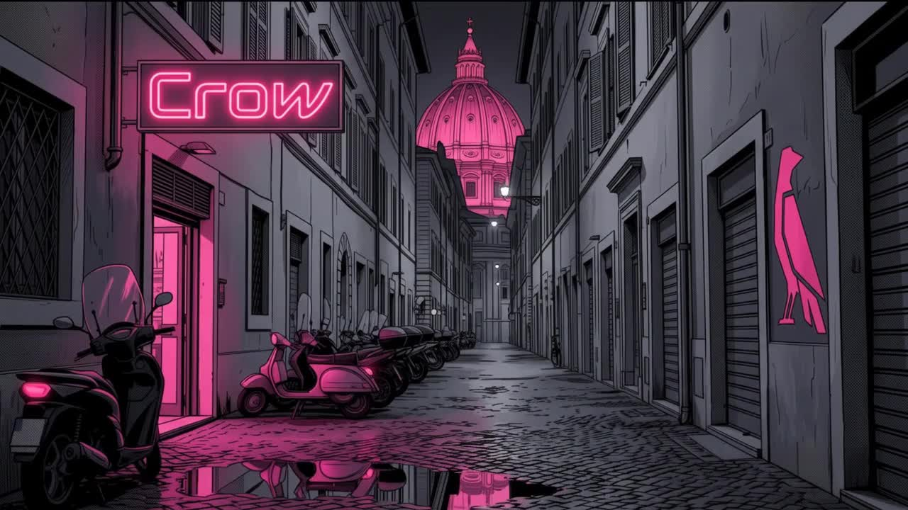

ROME. FIRST TIME?
FIND YOUR
OWN WAY IN.
A different route makes a different story.
01 / ROME AFTER DARKSCROLL ↓
AFTERHOURS / AN INTERACTIVE REFERENCE STUDY
A DIFFERENT WAY
TO TELL A STORY.
This implementation studies the palette, illustrated imagery and cinematic scroll format of Crow / Fly Crooked. The reference artwork and film assets belong to their original creators. Scroll implementation and adaptation by Hemal Herath.